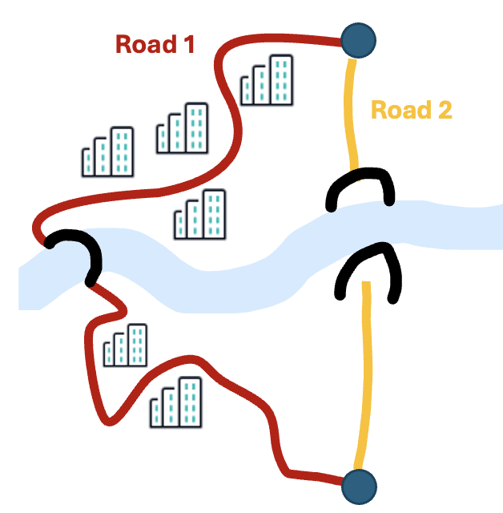

In this tutorial we look at the impact of ignoring the panel structure when in the true Data Generating Process the panel structure is present.
For this tutorial we use the same type of data as in tutorial 1, i.e. data from a two-alternative stated route choice experiment.
But we will create more tasks per individual: 10 responses per decision maker as oppossed to 5, and more individuals (N = 400). Both changes will make the impact of accounting or ignoring the panel structure more pronounced.

# Import the libraries
import pandas as pd
import numpy as np
import matplotlib.pyplot as plt
from pathlib import Path
import biogeme.biogeme_logging as blog
import biogeme.database as db
import biogeme.biogeme as bio
from biogeme import models
from biogeme.expressions import Beta, Variable, bioDraws, log, MonteCarlo, exp, bioMultSum, exp
# Set the number of columns to display in pandas
pd.set_option('display.max_columns', None)
Biogeme optimiser and logging settings
The file biogeme.toml contains the settings for the optimiser. In this file, we set the number of draws for estimating Mixed Logit models to 250. We use a relatively low number to avoid long estimation times. Also, we invoke a so-called logger which enables us to see the progress during estimation.
# Initialize the logger, if it has not been initialized yet
try:
logger
except NameError:
logger = blog.get_screen_logger(level=blog.INFO)
print('Logger has been initialised')
Logger has been initialised
# Create np array with the choice tasks (TC1, TT1, TC2, TT2).
# Each row is a choice task, and each column is an attribute of the choice task.
# This design is obtained using Ngene software.
tasks = np.array([ [5, 25, 7, 35],
[8, 20, 5, 40],
[6, 20, 6, 40],
[7, 35, 5, 25],
[6, 40, 6, 25],
[8, 25, 4, 35],
[4, 30, 8, 30],
[4, 35, 8, 20],
[5, 40, 7, 20],
[7, 30, 4, 30]])
# Determine the number of choice situations per respondent
T = len(tasks)
# Set the number of respondents
N = 400
# Replicate the tasks N times
data = np.tile(tasks, (N, 1))
# Create respondent IDs to add to the dataframe
resp_id = np.expand_dims(np.repeat(np.arange(1, N+1), T), axis=1)
# Create a pandas dataframe
df = pd.DataFrame(np.concatenate((resp_id,data), axis=1), columns=['RESP','TC1', 'TT1', 'TC2', 'TT2'])
# Show the first 15 rows of the dataframe
df.head(15)
| RESP | TC1 | TT1 | TC2 | TT2 | |
|---|---|---|---|---|---|
| 0 | 1 | 5 | 25 | 7 | 35 |
| 1 | 1 | 8 | 20 | 5 | 40 |
| 2 | 1 | 6 | 20 | 6 | 40 |
| 3 | 1 | 7 | 35 | 5 | 25 |
| 4 | 1 | 6 | 40 | 6 | 25 |
| 5 | 1 | 8 | 25 | 4 | 35 |
| 6 | 1 | 4 | 30 | 8 | 30 |
| 7 | 1 | 4 | 35 | 8 | 20 |
| 8 | 1 | 5 | 40 | 7 | 20 |
| 9 | 1 | 7 | 30 | 4 | 30 |
| 10 | 2 | 5 | 25 | 7 | 35 |
| 11 | 2 | 8 | 20 | 5 | 40 |
| 12 | 2 | 6 | 20 | 6 | 40 |
| 13 | 2 | 7 | 35 | 5 | 25 |
| 14 | 2 | 6 | 40 | 6 | 25 |
True DGP
Let's create (synthetic) choices with a linear-additive Panel RUM-ML. To do so, we assume:
- All decision makers (denoted n) maximise utility (decision rule)
- Travel cost, travel time and the label matter to the choice behaviour
- Travel cost and travel time are normally distributed across individuals in the population:
$\beta_{tc_n} = \mathcal{N}(\mu_{tc},\sigma_{tc})$
$\beta_{tt_n} = \mathcal{N}(\mu_{tt},\sigma_{tt})$
$ASC_1 = 0$ $\forall \textit{n}$
$ASC_2 = 0.5$ $\forall \textit{n}$
where: $ASC_2 = 0.5$, $\mu_{tc} = -0.6$, $\mu_{tt} = -0.15$, $\sigma_{tc} = 0.15$, and $\sigma_{tc} = 0.04$ - Unobserved utilities are i.i.d. EV type I distributed
Hence, the utility function with this linear-additive Panel RUM-ML DGP is:
$U_{in} = V_{in} + \varepsilon_{in}$
$U_{in} = ASC_{i} + \beta_{tc_n} \cdot x^{tc}_{in} + \beta_{tt_n} \cdot x^{tt}_{in} + \varepsilon_{in}$
# Define the true utility parameters
asc_1 = 0
asc_2 = 0.5
mu_tc = -0.6
mu_tt = -0.15
sigma_tc = 0.15
sigma_tt = 0.04
print('True decision rule: Random Utility Maximisation (RUM), with parameters:')
print(f' asc1 = {asc_1} for all decision makers')
print(f' asc2 = {asc_2} for all decision makers')
print(f' beta_TC is normally distributed across decision makers with location: {mu_tc:0.2f} and standard deviation: {sigma_tc:0.2f}')
print(f' beta_TT is normally distributed across decision makers with location: {mu_tt:0.2f} and standard deviation: {sigma_tt:0.2f}')
True decision rule: Random Utility Maximisation (RUM), with parameters: asc1 = 0 for all decision makers asc2 = 0.5 for all decision makers beta_TC is normally distributed across decision makers with location: -0.60 and standard deviation: 0.15 beta_TT is normally distributed across decision makers with location: -0.15 and standard deviation: 0.04
# Fix the seed to make the results replicable
np.random.seed(42)
# Draw values beta_TC and beta_TT for each decision maker
beta_tcn = np.random.normal(mu_tc, sigma_tc, N)
beta_ttn = np.random.normal(mu_tt, sigma_tt, N)
# Replicate the values of beta_TC and beta_TT for each choice situation
beta_tc = np.repeat(beta_tcn,T)
beta_tt = np.repeat(beta_ttn,T)
# Show the panel structure
true_betas = pd.DataFrame({'RESP':df['RESP'],'B_tc_n': beta_tc, 'B_tt_n': beta_tt})
true_betas.head(15)
| RESP | B_tc_n | B_tt_n | |
|---|---|---|---|
| 0 | 1 | -0.525493 | -0.213777 |
| 1 | 1 | -0.525493 | -0.213777 |
| 2 | 1 | -0.525493 | -0.213777 |
| 3 | 1 | -0.525493 | -0.213777 |
| 4 | 1 | -0.525493 | -0.213777 |
| 5 | 1 | -0.525493 | -0.213777 |
| 6 | 1 | -0.525493 | -0.213777 |
| 7 | 1 | -0.525493 | -0.213777 |
| 8 | 1 | -0.525493 | -0.213777 |
| 9 | 1 | -0.525493 | -0.213777 |
| 10 | 2 | -0.620740 | -0.173975 |
| 11 | 2 | -0.620740 | -0.173975 |
| 12 | 2 | -0.620740 | -0.173975 |
| 13 | 2 | -0.620740 | -0.173975 |
| 14 | 2 | -0.620740 | -0.173975 |
--> Note that we assume an individual has stable taste parameters across choice tasks.
# Verify the distribution of beta_tc and beta_tt using a plot
fig, ax = plt.subplots(1, 2, figsize=(10, 4))
ax[0].hist(beta_tcn, bins=15, color='blue', alpha=0.7, edgecolor='black')
ax[0].set_title(f'True distribution of $\\beta_{{TC}}$ in the sample with\n mean = {np.mean(beta_tcn):.2f}, std = {np.std(beta_tcn):.2f}')
ax[1].hist(beta_ttn, bins=15, color='blue', alpha=0.7, edgecolor='black')
ax[1].set_title(f'True distribution of $\\beta_{{TT}}$ in the sample with\n mean = {np.mean(beta_ttn):.2f}, std = {np.std(beta_ttn):.2f}')
ax[0].set_xlabel('$\\beta_{TC}$')
ax[1].set_xlabel('$\\beta_{TT}$')
ax[0].set_ylabel('Frequency')
ax[1].set_ylabel('Frequency')
plt.show()
![No description has been provided for this image]()
# Compute the utilities given the DGP
df['V1'] = asc_1 + beta_tc * df['TC1'] + beta_tt * df['TT1']
df['V2'] = asc_2 + beta_tc * df['TC2'] + beta_tt * df['TT2']
# Add the error terms
df['epsilon1'] = np.random.gumbel(size=len(df))
df['epsilon2'] = np.random.gumbel(size=len(df))
# Compute the total utility
df['U1'] = df['V1'] + df['epsilon1']
df['U2'] = df['V2'] + df['epsilon2']
# Identify the chosen alternative
df['CHOICE'] = np.nan
df.loc[df['U1'] > df['U2'], 'CHOICE'] = 1
df.loc[df['U2'] > df['U1'], 'CHOICE'] = 2
# Convert the chosen alternative to an integer (optional)
df['CHOICE'] = df['CHOICE'].astype(int)
# Save the data in a csv file
data_path = Path(f'data/synthetic_VTTdata_tutorial3.dat')
df[['RESP','TC1', 'TT1', 'TC2', 'TT2','CHOICE']].to_csv(data_path, sep=',', index=False)
# Show the first rows
df.head()
# df.value_counts('CHOICE')
| RESP | TC1 | TT1 | TC2 | TT2 | V1 | V2 | epsilon1 | epsilon2 | U1 | U2 | CHOICE | |
|---|---|---|---|---|---|---|---|---|---|---|---|---|
| 0 | 1 | 5 | 25 | 7 | 35 | -7.971892 | -10.660649 | 0.956226 | -0.258462 | -7.015666 | -10.919111 | 1 |
| 1 | 1 | 8 | 20 | 5 | 40 | -8.479485 | -10.678549 | -0.568489 | 2.045503 | -9.047974 | -8.633046 | 2 |
| 2 | 1 | 6 | 20 | 6 | 40 | -7.428499 | -11.204042 | 3.277835 | 1.019855 | -4.150664 | -10.184187 | 1 |
| 3 | 1 | 7 | 35 | 5 | 25 | -11.160649 | -7.471892 | 0.097603 | 0.274050 | -11.063046 | -7.197842 | 2 |
| 4 | 1 | 6 | 40 | 6 | 25 | -11.704042 | -7.997385 | 1.341794 | 0.185042 | -10.362247 | -7.812342 | 2 |
--> We have created a data set in which the DGP is linear-additive Panel RUM-ML
# Define the Biogeme database object
biodata = db.Database('synthetic_VTTdata_tutorial3', df[['RESP','TC1', 'TT1', 'TC2', 'TT2','CHOICE']].copy())
# Tell Biogeme which variable is the identifier of the individuals
biodata.panel('RESP')
# Calculate the number of observations per individual
obs_per_ind = biodata.data['RESP'].value_counts().unique()[0]
print(f'Number of observations per individual: {obs_per_ind}')
# Use biogeme's "generateFlatPanelDataFrame to create a wide database in which each row corresponds to one individual
df_wide = biodata.generate_flat_panel_dataframe(identical_columns=None)
# Rename the columns, such that they run from columnname_{0} to columnname_{n}
renumbered_columns = {col: f'{col.split("_")[1]}_{int(col.split("_")[0])-1}' if len(col.split("_")) == 2 else col for col in df_wide.columns}
# Rename the columns using the dictionary
df_wide.rename(columns=renumbered_columns, inplace=True)
# Create Biogeme database object
biodata_wide = db.Database('synthetic_VTTdata_tutorial3_wide', df_wide)
biodata_wide.data.head()
Number of observations per individual: 10
| CHOICE_0 | TC1_0 | TC2_0 | TT1_0 | TT2_0 | CHOICE_1 | TC1_1 | TC2_1 | TT1_1 | TT2_1 | CHOICE_2 | TC1_2 | TC2_2 | TT1_2 | TT2_2 | CHOICE_3 | TC1_3 | TC2_3 | TT1_3 | TT2_3 | CHOICE_4 | TC1_4 | TC2_4 | TT1_4 | TT2_4 | CHOICE_5 | TC1_5 | TC2_5 | TT1_5 | TT2_5 | CHOICE_6 | TC1_6 | TC2_6 | TT1_6 | TT2_6 | CHOICE_7 | TC1_7 | TC2_7 | TT1_7 | TT2_7 | CHOICE_8 | TC1_8 | TC2_8 | TT1_8 | TT2_8 | CHOICE_9 | TC1_9 | TC2_9 | TT1_9 | TT2_9 | |
|---|---|---|---|---|---|---|---|---|---|---|---|---|---|---|---|---|---|---|---|---|---|---|---|---|---|---|---|---|---|---|---|---|---|---|---|---|---|---|---|---|---|---|---|---|---|---|---|---|---|---|
| RESP | ||||||||||||||||||||||||||||||||||||||||||||||||||
| 1 | 1 | 5 | 7 | 25 | 35 | 2 | 8 | 5 | 20 | 40 | 1 | 6 | 6 | 20 | 40 | 2 | 7 | 5 | 35 | 25 | 2 | 6 | 6 | 40 | 25 | 1 | 8 | 4 | 25 | 35 | 1 | 4 | 8 | 30 | 30 | 2 | 4 | 8 | 35 | 20 | 2 | 5 | 7 | 40 | 20 | 2 | 7 | 4 | 30 | 30 |
| 2 | 1 | 7 | 4 | 30 | 30 | 2 | 5 | 7 | 40 | 20 | 1 | 4 | 8 | 30 | 30 | 2 | 8 | 4 | 25 | 35 | 2 | 4 | 8 | 35 | 20 | 2 | 7 | 5 | 35 | 25 | 1 | 6 | 6 | 20 | 40 | 1 | 8 | 5 | 20 | 40 | 1 | 5 | 7 | 25 | 35 | 2 | 6 | 6 | 40 | 25 |
| 3 | 2 | 7 | 4 | 30 | 30 | 2 | 5 | 7 | 40 | 20 | 1 | 4 | 8 | 35 | 20 | 2 | 4 | 8 | 30 | 30 | 2 | 8 | 4 | 25 | 35 | 2 | 6 | 6 | 40 | 25 | 1 | 6 | 6 | 20 | 40 | 1 | 8 | 5 | 20 | 40 | 1 | 5 | 7 | 25 | 35 | 2 | 7 | 5 | 35 | 25 |
| 4 | 1 | 4 | 8 | 30 | 30 | 2 | 7 | 4 | 30 | 30 | 2 | 5 | 7 | 40 | 20 | 2 | 4 | 8 | 35 | 20 | 2 | 8 | 4 | 25 | 35 | 1 | 6 | 6 | 20 | 40 | 2 | 7 | 5 | 35 | 25 | 2 | 6 | 6 | 40 | 25 | 1 | 8 | 5 | 20 | 40 | 1 | 5 | 7 | 25 | 35 |
| 5 | 2 | 7 | 4 | 30 | 30 | 2 | 5 | 7 | 40 | 20 | 2 | 4 | 8 | 35 | 20 | 1 | 4 | 8 | 30 | 30 | 1 | 8 | 4 | 25 | 35 | 2 | 7 | 5 | 35 | 25 | 1 | 6 | 6 | 20 | 40 | 2 | 8 | 5 | 20 | 40 | 1 | 5 | 7 | 25 | 35 | 2 | 6 | 6 | 40 | 25 |
We define the model specification.
# Give the model a name
model_name = 'Panel RUM-ML model with normally distributed parameters'
# Parameters definition enabling the construction of random parameters
ASC1 = Beta('ASC1', 0, None, None, 1)
ASC2 = Beta('ASC2', 0, None, None, 0)
mu_tc = Beta('mu_tc', -0.1, None, None, 0)
mu_tt = Beta('mu_tt', -0.1, None, None, 0)
sigma_tc = Beta('sigma_tc ', 0.1, None, None, 0)
sigma_tt = Beta('sigma_tt ', 0.1, None, None, 0)
# Construction of random parameters
B_tc_rnd = mu_tc + sigma_tc * bioDraws('B_tc_rnd', 'NORMAL_HALTON2')
B_tt_rnd = mu_tt + sigma_tt * bioDraws('B_tt_rnd', 'NORMAL_HALTON2')
# Definition of the utility functions
# Note that we use list comprehension to create a list of utility functions for all observations of an individual
V1 = [(ASC1 + B_tc_rnd * Variable(f'TC1_{q}') + B_tt_rnd * Variable(f'TT1_{q}')) for q in range(obs_per_ind)]
V2 = [(ASC2 + B_tc_rnd * Variable(f'TC2_{q}') + B_tt_rnd * Variable(f'TT2_{q}')) for q in range(obs_per_ind)]
# Create a dictionary to list the utility functions with the numbering of alternatives
# Note that we use list comprehension to create a list of dictionaries
V = [{1: V1[q], 2: V2[q]} for q in range(obs_per_ind)]
# Create a dictionary to describe the availability conditions of each alternative
av = {1:1, 2:1}
We estimate the model and print the results.
# Estimate the model
# The conditional probability of the chosen alternative is a logit
condProb = [models.loglogit(V[q], av, Variable(f'CHOICE_{q}')) for q in range(obs_per_ind)]
# Take the product of the conditional probabilities
condprobIndiv = exp(bioMultSum(condProb)) # exp to convert from logP to P again
# The unconditional probability is obtained by simulation
uncondProb = MonteCarlo(condprobIndiv)
# The Log-likelihood is the log of the unconditional probability
LL = log(uncondProb)
# Create the Biogeme estimation object containing the data and the model
biogeme = bio.BIOGEME(biodata_wide , LL, number_of_draws=100)
# Set reporting levels
biogeme.generate_pickle = False
biogeme.generate_html = False
biogeme.save_iterations = False
biogeme.modelName = model_name
# Compute the null loglikelihood for reporting
# Note that we need to compute it manually, as biogeme does not do this for panel data
biogeme.nullLogLike = len(biodata_wide.data)*np.log(1/2)*obs_per_ind
# Estimate the parameters and print the results
results = biogeme.estimate()
print(results.print_general_statistics())
# Get the results in a pandas table
beta_hat = results.get_estimated_parameters()
print(beta_hat)
Default values of the Biogeme parameters are used.
File biogeme.toml has been created
As the model is rather complex, we cancel the calculation of second derivatives. If you want to control the parameters, change the name of the algorithm in the TOML file from "automatic" to "simple_bounds"
The number of draws (100) is low. The results may not be meaningful.
As the model is rather complex, we cancel the calculation of second derivatives. If you want to control the parameters, change the name of the algorithm in the TOML file from "automatic" to "simple_bounds"
Optimization algorithm: hybrid Newton/BFGS with simple bounds [simple_bounds]
** Optimization: BFGS with trust region for simple bounds
Iter. ASC2 mu_tc mu_tt sigma_tc sigma_tt Function Relgrad Radius Rho
0 0 -0.1 -0.1 0.1 0.1 2.1e+03 0.96 0.5 -0.3 -
1 0 -0.1 -0.1 0.1 0.1 2.1e+03 0.96 0.25 -0.47 -
2 0 -0.1 -0.1 0.1 0.1 2.1e+03 0.96 0.12 -0.82 -
3 0 -0.1 -0.1 0.1 0.1 2.1e+03 0.96 0.062 -1.3 -
4 0.062 -0.16 -0.038 0.16 0.038 2e+03 2.9 0.062 0.25 +
5 0.067 -0.17 -0.1 0.16 0.1 2e+03 0.76 0.062 0.29 +
6 0.078 -0.23 -0.093 0.17 0.072 1.8e+03 0.52 0.62 1.2 ++
7 0.078 -0.23 -0.093 0.17 0.072 1.8e+03 0.52 0.31 -0.35 -
8 0.078 -0.23 -0.093 0.17 0.072 1.8e+03 0.52 0.16 0.021 -
9 0.12 -0.39 -0.14 0.2 -0.051 1.7e+03 0.49 0.16 0.69 +
10 0.12 -0.39 -0.14 0.2 -0.051 1.7e+03 0.49 0.078 0.084 -
11 0.12 -0.39 -0.14 0.2 -0.051 1.7e+03 0.49 0.039 -2.3 -
12 0.12 -0.39 -0.14 0.2 -0.051 1.7e+03 0.49 0.02 -0.69 -
13 0.14 -0.41 -0.16 0.18 -0.032 1.7e+03 0.65 0.02 0.33 +
14 0.15 -0.43 -0.14 0.18 -0.049 1.7e+03 0.43 0.02 0.77 +
15 0.17 -0.45 -0.15 0.16 -0.029 1.6e+03 0.42 0.2 1 ++
16 0.17 -0.45 -0.15 0.16 -0.029 1.6e+03 0.42 0.098 -2.6 -
17 0.17 -0.45 -0.15 0.16 -0.029 1.6e+03 0.42 0.049 -3.7 -
18 0.17 -0.45 -0.15 0.16 -0.029 1.6e+03 0.42 0.024 -0.65 -
19 0.17 -0.46 -0.13 0.16 -0.033 1.6e+03 0.36 0.024 0.33 +
20 0.19 -0.48 -0.14 0.15 -0.0086 1.6e+03 0.17 0.024 0.64 +
21 0.2 -0.5 -0.14 0.14 -0.033 1.6e+03 0.14 0.024 0.72 +
22 0.23 -0.53 -0.15 0.13 -0.018 1.6e+03 0.35 0.024 0.36 +
23 0.23 -0.53 -0.15 0.13 -0.018 1.6e+03 0.35 0.012 -0.3 -
24 0.23 -0.53 -0.14 0.13 -0.03 1.6e+03 0.18 0.012 0.66 +
25 0.24 -0.54 -0.15 0.12 -0.03 1.6e+03 0.065 0.12 0.94 ++
26 0.24 -0.54 -0.15 0.12 -0.03 1.6e+03 0.065 0.061 -1.1 -
27 0.24 -0.54 -0.15 0.12 -0.03 1.6e+03 0.065 0.031 -0.28 -
28 0.27 -0.55 -0.14 0.11 -0.022 1.6e+03 0.29 0.031 0.27 +
29 0.31 -0.56 -0.15 0.094 -0.027 1.6e+03 0.23 0.031 0.55 +
30 0.31 -0.56 -0.15 0.094 -0.027 1.6e+03 0.23 0.015 -0.54 -
31 0.31 -0.56 -0.15 0.094 -0.042 1.6e+03 0.16 0.015 0.2 +
32 0.33 -0.56 -0.14 0.088 -0.03 1.6e+03 0.11 0.015 0.69 +
33 0.33 -0.56 -0.14 0.088 -0.03 1.6e+03 0.11 0.0076 -0.25 -
34 0.33 -0.55 -0.15 0.088 -0.036 1.6e+03 0.083 0.0076 0.45 +
35 0.34 -0.55 -0.15 0.086 -0.038 1.6e+03 0.087 0.0076 0.54 +
36 0.35 -0.55 -0.15 0.083 -0.032 1.6e+03 0.059 0.0076 0.68 +
37 0.36 -0.55 -0.15 0.082 -0.038 1.6e+03 0.039 0.0076 0.85 +
38 0.36 -0.55 -0.15 0.08 -0.033 1.6e+03 0.054 0.076 0.9 ++
39 0.44 -0.55 -0.15 0.066 -0.043 1.6e+03 0.066 0.076 0.7 +
40 0.44 -0.55 -0.15 0.066 -0.043 1.6e+03 0.066 0.038 -1.2 -
41 0.44 -0.55 -0.15 0.066 -0.043 1.6e+03 0.066 0.019 -1.2 -
42 0.44 -0.55 -0.15 0.066 -0.043 1.6e+03 0.066 0.0095 -1.5 -
43 0.45 -0.56 -0.15 0.062 -0.034 1.6e+03 0.079 0.0095 0.18 +
44 0.46 -0.56 -0.15 0.064 -0.039 1.6e+03 0.058 0.0095 0.85 +
45 0.46 -0.56 -0.15 0.064 -0.039 1.6e+03 0.058 0.0048 -0.19 -
46 0.46 -0.56 -0.15 0.064 -0.039 1.6e+03 0.058 0.0024 -0.056 -
47 0.46 -0.56 -0.15 0.064 -0.041 1.6e+03 0.042 0.0024 0.28 +
48 0.46 -0.56 -0.15 0.064 -0.039 1.6e+03 0.016 0.024 0.97 ++
49 0.49 -0.56 -0.15 0.067 -0.042 1.6e+03 0.044 0.024 0.78 +
50 0.51 -0.56 -0.15 0.07 -0.036 1.6e+03 0.1 0.024 0.12 +
51 0.54 -0.57 -0.15 0.074 -0.04 1.6e+03 0.018 0.024 0.53 +
52 0.54 -0.57 -0.15 0.074 -0.04 1.6e+03 0.018 0.012 -0.85 -
53 0.54 -0.56 -0.15 0.073 -0.039 1.6e+03 0.025 0.012 0.33 +
54 0.54 -0.56 -0.15 0.073 -0.039 1.6e+03 0.025 0.006 -10 -
55 0.54 -0.56 -0.15 0.073 -0.039 1.6e+03 0.025 0.003 -3.5 -
56 0.54 -0.56 -0.15 0.073 -0.039 1.6e+03 0.025 0.0015 -0.82 -
57 0.54 -0.56 -0.15 0.073 -0.039 1.6e+03 0.018 0.0015 0.33 +
58 0.54 -0.56 -0.15 0.073 -0.038 1.6e+03 0.0092 0.0015 0.71 +
59 0.54 -0.56 -0.15 0.073 -0.038 1.6e+03 0.0092 0.00075 -0.35 -
60 0.54 -0.56 -0.15 0.073 -0.039 1.6e+03 0.0055 0.00075 0.55 +
61 0.54 -0.56 -0.15 0.073 -0.039 1.6e+03 0.0055 0.00037 -0.7 -
62 0.54 -0.56 -0.15 0.073 -0.039 1.6e+03 0.0063 0.00037 0.17 +
63 0.54 -0.56 -0.15 0.073 -0.039 1.6e+03 0.0012 0.0037 0.92 ++
64 0.54 -0.56 -0.15 0.073 -0.039 1.6e+03 0.0012 0.0019 -2 -
65 0.54 -0.56 -0.15 0.073 -0.039 1.6e+03 0.0012 0.00093 -1.9 -
66 0.54 -0.56 -0.15 0.073 -0.039 1.6e+03 0.0012 0.00047 -2.6 -
67 0.54 -0.56 -0.15 0.073 -0.039 1.6e+03 0.0012 0.00023 -0.35 -
68 0.54 -0.56 -0.15 0.074 -0.039 1.6e+03 0.0025 0.00023 0.24 +
69 0.54 -0.56 -0.15 0.074 -0.039 1.6e+03 0.00071 0.0023 0.97 ++
70 0.54 -0.56 -0.15 0.072 -0.039 1.6e+03 0.00097 0.0023 0.25 +
71 0.54 -0.56 -0.15 0.072 -0.039 1.6e+03 0.00097 0.0012 -0.13 -
72 0.54 -0.56 -0.15 0.073 -0.039 1.6e+03 0.0013 0.0012 0.55 +
73 0.54 -0.56 -0.15 0.073 -0.039 1.6e+03 0.0013 0.00058 -3.3 -
74 0.54 -0.56 -0.15 0.073 -0.039 1.6e+03 0.0013 0.00029 -1.5 -
75 0.54 -0.56 -0.15 0.073 -0.039 1.6e+03 0.0013 0.00015 0.089 -
76 0.54 -0.56 -0.15 0.073 -0.039 1.6e+03 0.00071 0.00015 0.41 +
77 0.54 -0.56 -0.15 0.073 -0.039 1.6e+03 0.0001 0.00015 0.79 +
Number of estimated parameters: 5
Sample size: 400
Excluded observations: 0
Null log likelihood: -2772.589
Init log likelihood: -2129.086
Final log likelihood: -1589.603
Likelihood ratio test for the null model: 2365.972
Rho-square for the null model: 0.427
Rho-square-bar for the null model: 0.425
Likelihood ratio test for the init. model: 1078.966
Rho-square for the init. model: 0.253
Rho-square-bar for the init. model: 0.251
Akaike Information Criterion: 3189.206
Bayesian Information Criterion: 3209.163
Final gradient norm: 2.4458E-01
Number of draws: 100
Draws generation time: 0:00:00.035900
Types of draws: ['B_tc_rnd: NORMAL_HALTON2', 'B_tt_rnd: NORMAL_HALTON2']
Nbr of threads: 10
Value Rob. Std err Rob. t-test Rob. p-value
ASC2 0.541310 0.045252 11.961994 0.000000e+00
mu_tc -0.562936 0.020155 -27.930600 0.000000e+00
mu_tt -0.151769 0.005333 -28.456079 0.000000e+00
sigma_tc 0.073319 0.034223 2.142379 3.216298e-02
sigma_tt -0.039167 0.006998 -5.596601 2.185955e-08
Based on the above estimation results, we can make a couple of observations:
1. The true parameters are recovered well. The estimated parameters are close to the true values, i.e. withint est 1.96 * S.E.
2. The standard errors are fairly small, which is expected given the sample size.
3. The model seems properly converged, as we see a descent rho square and no suspiciously large S.E. or parameter estimates.
3. The effect of ignoring the panel structure
Now we are going to estimate a linear-additive RUM-MNL model. The utility function of this model is well specified (i.e. it matches the true DGP). But the MNL model does not account for panel structures (or the heterogeneity). That is, it cannot see that N individuals made T choices. Instead, it treats every observation as a new independent data point. Hence, it ignores the fact that individuals tastes are correlated across choice observations.
# Define the Biogeme database object
biodata = db.Database('synthetic_VTTdata_tutorial4', df[['RESP','TC1', 'TT1', 'TC2', 'TT2','CHOICE']])
# We create Variable objects for each of the variables in the data set that we want to use in the model
TT1 = Variable('TT1')
TC1 = Variable('TC1')
TT2 = Variable('TT2')
TC2 = Variable('TC2')
CHOICE = Variable('CHOICE')
# Define the parameters to be estimated
ASC1 = Beta('ASC1', 0, None, None, 1)
ASC2 = Beta('ASC2', 0, None, None, 0)
B_TT = Beta('B_TT', 0, None, None, 0)
B_TC = Beta('B_TC', 0, None, None, 0)
# Define the utility functions
V1 = ASC1 + B_TT * TT1 + B_TC * TC1
V2 = ASC2 + B_TT * TT2 + B_TC * TC2
# Create a dictionary to list the utility functions with the numbering of alternatives
V = {1: V1, 2: V2}
# Create a dictionary called av to describe the availability conditions of each alternative, where 1 indicates that the alternative is available, and 0 indicates that the alternative is not available.
av = {1: 1, 2: 1}
# Define the choice model: The function models.logit() computes the MNL choice probabilities of the chosen alternative given the V.
prob = models.logit(V, av, CHOICE)
# Define the log-likelihood
LL = log(prob)
# Create the Biogeme object containing the object database and the formula for the contribution to the log-likelihood of each row using the following syntax:
biogeme = bio.BIOGEME(biodata, LL)
# The following syntax passes the name of the model:
model_name = 'MNL model'
biogeme.modelName = model_name
# Some object settings regarding whether to save the results and outputs
biogeme.generate_pickle = False
biogeme.generate_html = False
biogeme.save_iterations = False
# Syntax to calculate the null log-likelihood. The null-log-likelihood is used to compute the rho-square
biogeme.calculate_null_loglikelihood(av)
# This line starts the estimation and returns the results object.
results_MNL = biogeme.estimate()
# Print the estimation statistics
print(results_MNL.short_summary())
# Get the results in a pandas table
beta_hat_MNL = results_MNL.get_estimated_parameters()
print(beta_hat_MNL)
Biogeme parameters read from biogeme.toml.
As the model is not too complex, we activate the calculation of second derivatives. If you want to change it, change the name of the algorithm in the TOML file from "automatic" to "simple_bounds"
As the model is not too complex, we activate the calculation of second derivatives. If you want to change it, change the name of the algorithm in the TOML file from "automatic" to "simple_bounds"
Optimization algorithm: hybrid Newton/BFGS with simple bounds [simple_bounds]
** Optimization: Newton with trust region for simple bounds
Iter. ASC2 B_TC B_TT Function Relgrad Radius Rho
0 0.31 -0.39 -0.1 1.7e+03 0.87 10 1.1 ++
1 0.46 -0.51 -0.13 1.6e+03 0.14 1e+02 1.1 ++
2 0.5 -0.54 -0.14 1.6e+03 0.0064 1e+03 1 ++
3 0.5 -0.54 -0.14 1.6e+03 1.6e-05 1e+03 1 ++
Results for model MNL model
Nbr of parameters: 3
Sample size: 4000
Excluded data: 0
Null log likelihood: -2772.589
Final log likelihood: -1609.389
Likelihood ratio test (null): 2326.4
Rho square (null): 0.42
Rho bar square (null): 0.418
Akaike Information Criterion: 3224.777
Bayesian Information Criterion: 3243.659
Value Rob. Std err Rob. t-test Rob. p-value
ASC2 0.502644 0.045858 10.960796 0.0
B_TC -0.543329 0.018170 -29.902751 0.0
B_TT -0.141622 0.004033 -35.113956 0.0
# Compute the ratio of the standard errors for comparison
ratio_SE = beta_hat['Rob. Std err'][0:3].values/beta_hat_MNL['Rob. Std err'].values
# Show in a dataframe
pd.DataFrame(ratio_SE, columns=['Ratio of standard errors'], index=beta_hat_MNL.index)
| Ratio of standard errors | |
|---|---|
| ASC2 | 0.986787 |
| B_TC | 1.109243 |
| B_TT | 1.322385 |
--> We can make a couple of observations:
1. The standard errors of the MNL model are smaller than those from the Panel ML model (except for the ASC). This result was to be expected since the MNL model overestimates the number of iid data points in the data set because it is blind to the panel structure.
2. The estimates of the MNL model seem pretty okay. One reason why we do not see more pronounced bias in th estimates is that the normal distribution is symmetric. But more careful inspection shows that B_tt is actually biased
3. The Final log-likelihood of the Panel ML model is higher that of the MNL model. This is expected because the former is matches the true DGP, while the latter does not